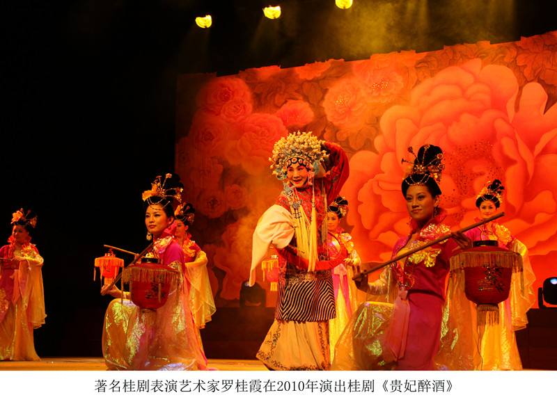

桂派戏曲曲艺艺术文化（桂林）生态保护实验区
作者： 来源： 发布时间：2016-07-26

桂派戏曲曲艺艺术文化生态保护实验区是指以广西桂林为中心，对分布在桂林区域，特色鲜明、形式和内涵保持完整的桂派戏曲曲艺艺术及其他非物质文化遗产代表性项目的文化生态实行区域性整体保护，经桂林市人民政府同意，由桂林市文化局向自治区文化厅申报建立的特定地区 。2015年4月，自治区文化厅批准设立桂派戏曲曲艺艺术文化（桂林）生态保护实验区
桂派戏曲曲艺艺术文化（桂林）生态保护区内非物质文化遗产存量丰富，以地方戏曲曲艺艺术、民族文化为核心，有着独特的地域性、民族性的特点，构成了独具特色的桂林地方文化生态。截止至 20156年，保护区内非物质文化遗产国家级名录项目 4项，自治区级名录项目 589项，市级项目 98项，县区级项271项。有国家级代表性项目传承人4人，自治区级传承人39人，市级传承人96人，有自治区级传承基地17个。